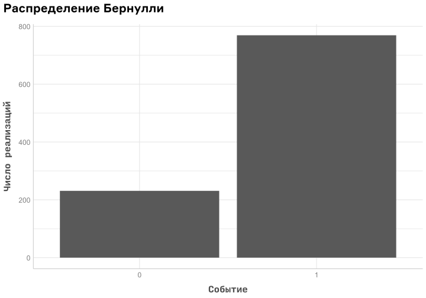
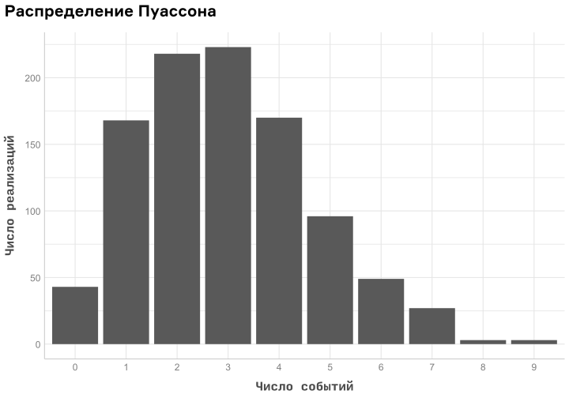
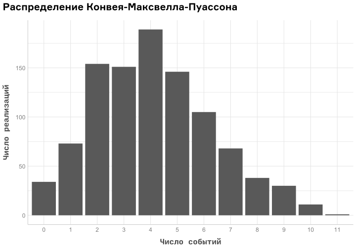
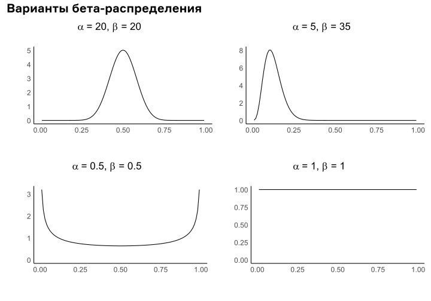

You’re going to Brazil или Считаем размер выборки для A/B-теста в бразильском маркетплейсе
Автор
Манаенков Александр
0. Прелюдия
Однажды мы в karpov.courses решили обновить блок продуктовой аналитики на курсе “Аналитик данных”. Поменялось много чего, но среди прочего в конце блока появился итоговый проект, где студенты должны были самостоятельно проанализировать данные какого-то бразильского маркетплейса . И одна из (бывших)1 задач этого проекта – рассчитать необходимый размер выборки для будущего эксперимента (АБ-теста).
1 В итоге эта задача оказалась слишком сложной для начинающих аналитиков без опыта подобного анализа, поэтому мы её убрали. Тем полезнее этот документ.
Расчёт необходимого размера выборки – важная вещь и в научных, и в индустриальных исследованиях. Знание того, как много данных нам нужно собрать, чтобы быть уверенными в результатах, дорогого стоит. Однако так ли легко это сделать?
Очень часто в изучении какой-то темы можно встретить три этапа:
“Господи, это что такое? Не понимаю.”
“А, так вот что это такое! Я уловил идею!”
“АААААААААААААААААААА КАК ЖЕ ВСЁ СЛОЖНО падает в бездну человеческого невежества”
Расчёт размера выборки в этом плане не исключение. Эти три пункта в таком случае выглядят вот так:
“Да как его считать-то? Какой функцией, что в этой функции надо указать, откуда вообще брать значения этих чисел?”
“А, понятненько. Вот тут указываем ошибку I рода, вот тут указываем мощность, вот тут минимальное различие. Не везде понятно, как это различие считать, но для t-критерия это легко - просто делим ожидаемое различие в средних на стандартное отклонение метрики. Подумать надо, конечно, но в целом процедура простая.”
“У КАЖДОЙ ФОРМУЛЫ ЕСТЬ ДОПУЩЕНИЯ КАК МЫ МОЖЕМ ЗНАТЬ ЧТО ОНИ СОБЛЮДАЮТСЯ ЧТО ДЕЛАТЬ ЕСЛИ ЭТО НЕ ТАК АААААААААААА падает в бездну различий между статистикой и реальным миром”
Все студенты гарантированно начинают с 1 стадии. Мы надеемся, что заинтересованный в статистике и A/B-тестах студент вскорости дойдёт до 2 стадии. Беда в том, что я сам уже давно нахожусь в 3 стадии и знаю, что формулам расчёта размера выборки нельзя слепо верить. Как писал в своём блоге нейроучёный Guillaume D. Rousselet, “Your power is lower what you think” – реальный размер выборки может быть совсем не тем, каким мы его ожидаем, и очень часто он должен быть выше.
Как в таком случае понять, сколько на самом деле надо? Идеального ответа, конечно же, нет, но есть близкий к этому - путём симуляции данных. Логика простая2:
2 Да, я люблю нумерованные списки. Что вы мне сделаете? Ничего.
Имитируем данные, идентичные натуральным
Используем на этих данных интересующий нас статистический критерий
Смотрим, насколько хорошо он с этими данными справляется
Так можно проверять много чего, но в контексте расчёта размера выборки идея простая: варьируем размер этих симулированных данных, смотрим, для какого размера данных наш тест становится достаточно чувствительным.
Естественно, “идея простая” не значит “реализация простая” – как-никак мы пытаемся симулировать процесс того, как эти данные могли возникнуть, что намного сложнее подставления чисел в формулу. К тому же нам всё ещё приходится делать допущение, что созданная нами имитация процесса отражает все необходимые его характеристики, иначе в точность расчётов верить нельзя. Но это лучший вариант из возможных.
0.1 Для кого эта статья?
Пожалуй, моя главная целевая аудитория – это студенты karpov.courses и им сочувствующие. В целом эта штука может быть интересна всем, кто когда-нибудь пытался самостоятельно считать размер выборки или в целом любит статистический анализ данных.
По ходу текста я буду приводить краткие справки на тему релевантных этой работе идей. Однако это не учебник по статистике, и поэтому для совсем неискушённого в этих вопросах читателя этот текст будет сложноват. Поэтому назову несколько вещей, которые я ожидаю от читающих этот трактат. Вы хотя бы примерно должны понимать:
Что я вообще такое написал в вводной части;
Каким образом формируются экспериментальные группы в A/B-тестах;
Что такое среднее и дисперсия/стандартное отклонение;
Что такое распределения данных;
Что такое статистические тесты и какие они бывают (если знаете, что такое t-критерий – супер);
В чём заключается смысл p-value и как его использовать3;
(желательно) Английский язык – многие материалы, на которые я буду давать ссылки, являются англоязычными, и владение английским в целом будет очень полезно для понимания происходящего;
(очень желательно) Как писать код для анализа данных – если у вас есть опыт работы с тем же Python, то структура работы для вас будет более понятной. В какой-то момент у меня будет много комментариев по поводу написанного мной кода, и для читателей без какого-либо опыта программирования это будет восприниматься как шум. Впрочем, надеюсь, что даже в таком случае общая идея работы останется понятной.
3 Это самый коварный пункт, так как p-value довольно часто ложно интерпретируют. Я ожидаю хотя бы самого смутного понимания, как оно фигурирует в принятии решений на основе статистики, но дополнительно приложу ссылку на разбор самых частых мифов про p-value.
0.2 Что и как будем делать?
У нас есть данные, которые содержат в себе информацию о заказах пользователей и их статусе. В частности, нас интересует доля неотменённых заказов и сколько наблюдений нам нужно, чтобы зафиксировать изменение этой доли на 1%. Сначала мы попробуем оценить размер выборки несколькими формулами, затем перейдём к симуляциям и по итогу сравним результаты.
В качестве инструмента анализа я использую здесь язык R и его пакеты. Сама html-страничка, которую вы сейчас читаете, сделана с использованием Quatro. Ниже я кратко сформулирую, почему я пользуюсь именно ими, а не Python/Jupyter Notebook.
0.2.1 Почему R?
R – один из двух наиболее известных языков программирования, используемых для анализа данных (наряду с Python). Однако исторически сложилось так, что R в большей степени распространён в социальных науках и медицинских исследованиях, в то время как в индустрии доминирует Python (особенно на территории России и стран СНГ). Так почему в этой работе используется именно R, а не Python - особенно учитывая, что в karpov.courses мы учим именно Python?
Первая причина на момент написания этой работы уже неактуальна – чтобы будущие студенты karpov.courses не списывали отсюда решение задания. Хотя сообразительный студент всё ещё сможет переложить реализованные здесь идеи на Python, это всё ещё требует самостоятельной работы и в моих глазах уже не является читерством. Слабые студенты же сделать это вряд ли смогут, даже с помощью ChatGPT4. Опять же, так как это больше не задание проекта, это уже не столь принципиально.
4 Если вы решите это сделать и у вас получатся хоть какие-то осмысленные результаты – напишите мне!
Вторая причина предельно простая: я очень люблю R как инструмент анализа данных. Наверное, будь я программистом по образованию, моё мнение было бы иное – однако я по образованию психолог и подхожу к вопросу именно как исследователь в поисках удобного инструмента. И так вышло, что для многих вещей, связанных со статистикой, мне R кажется намного более удобным, чем Python. К тому же я R знаю гораздо дольше (это мой первый язык программирования) и поэтому для меня он комфортнее как минимум ввиду большей привычности.
Третья причина отчасти связана с предыдущей: ряд вещей, которые мне пригодятся в этой работе, на Python либо реализованы кривенько, либо не реализованы вообще (или я просто не знаю, как их сделать). Соответственно, грех не воспользоваться инструментом, который эти возможности даёт.
Наконец, не исключаю, что после чтения этой работы кто-то сам заинтересуется R как инструментом аналитики. В таком случае это будет мой небольшой вклад в русскоязычное R-коммьюнити :)
0.2.2 Почему Quarto?
Quatro – это ПО для создания отчётности в ряде различных форматов. HTML, Word и PDF являются стандартными вариантами, но в Quatro также можно делать презентации, дашборды, статьи и другие подобные вещи. По сути это потомок RMarkdown, существовавшего для этих же целей, но привязанного только к R. Quarto же поддерживает ещё Python, Julia и Observable.
Технически я мог бы сделать эту работу в Jupyter Notebook – как я уже делал это ранее. Хотя это в первую очередь инструмент для питонистов, R он тоже поддерживает5. Однако Quarto как инструмент отчётности позволяет делать много приятных вещей, связанных с оформлением повествования, которые в Jupyter приходится делать либо путём редактирования HTML, либо вообще нельзя сделать.
5 Само название Jupyter происходит от названий трёх языков программирования, которые он поддерживает: Julia, Python, R.
6 Есть также ряд пакетов, которые тут не импортированы, но я всё ещё использую их функции (в R так можно). Как правило, это пакеты, которые мне нужны 1-2 раза и не так важны для повествования, но их функционал важен для моего кода. В коде они представлены в виде название_пакета::название_функции().
Одна из таких вещей – это возможность сворачивать код (на блогерском жаргоне “прятать под катом”). Приведу сразу же пример: если вы тыкнете на название “Основные импорты” ниже, то увидите список основных пакетов, используемых в этой работе6:
Основные импорты
library(tidyverse) #подготовка данных и визуализацияlibrary(kableExtra) #форматирование табличекlibrary(pwr) #мощность по формуламlibrary(patchwork) #склеивание нескольких графиков в одинlibrary(COMPoissonReg) #для распределения CMPlibrary(extraDistr) #дополнительные функции распределенийlibrary(furrr) #для исполнения функций параллельноlibrary(progressr) #шкала прогресса#а заодно шрифты для заголовка и подписей к графикамtitle_theme <-theme(plot.title =element_text(family ="Formular", face ="bold", size =20), axis.title =element_text(family ="Input Mono", face ="bold", size =15), legend.title =element_text(family ="Input Mono", face ="bold", size =16))
Большая часть кода далее также будет свёрнута, но вы можете развернуть и посмотреть на него, если вам интересны детали. В некоторых местах код полностью спрятан (если он совсем не важен для повествования), а в некоторых виден сразу (если он является частью повествования).
Есть и другие прикольные вещи, которые я тут активно эксплуатирую7. Я не буду обращать на них ваше внимание, но если вдруг у вас в голове проскочит мысль “о, как интересно выглядит, как это было сделано?” или вам даже просто понравится формат этой работы – обязательно загляните в документацию Quarto. Возможно, вам тоже понравится с этим работать.
7 Например, вот эти сноски на полях. Сюда я буду помещать дополнительные материалы или просто единичные высказывания на тему.
Теперь, когда мы всё проговорили, время приступать к анализу!
1. Знакомимся с данными
Прежде чем заниматься всякой разной статистикой, стоит понять, с чем мы вообще работаем. Оригинальный набор данных состоит аж из 9 файлов с разными полями (в нашем курсе используется 3, что тоже много), но нам понадобятся всего 4 поля. Они представлены ниже:
Данные
#читаем данные orders <-read_csv("Data/olist_orders_dataset.csv", show_col_types =FALSE)users <-read_csv("Data/olist_customers_dataset.csv", show_col_types =FALSE)#объединяем в единую табличкуorders %>%left_join(users, by ="customer_id") %>%select(customer_unique_id, order_id, order_status, order_purchase_timestamp) -> df#избавляемся от лишних переменныхrm(orders)rm(users)#выводим первые 7 строк в виде табличкиdf %>%head() %>%kbl() %>%kable_material(font_size =12)
customer_unique_id
order_id
order_status
order_purchase_timestamp
7c396fd4830fd04220f754e42b4e5bff
e481f51cbdc54678b7cc49136f2d6af7
delivered
2017-10-02 10:56:33
af07308b275d755c9edb36a90c618231
53cdb2fc8bc7dce0b6741e2150273451
delivered
2018-07-24 20:41:37
3a653a41f6f9fc3d2a113cf8398680e8
47770eb9100c2d0c44946d9cf07ec65d
delivered
2018-08-08 08:38:49
7c142cf63193a1473d2e66489a9ae977
949d5b44dbf5de918fe9c16f97b45f8a
delivered
2017-11-18 19:28:06
72632f0f9dd73dfee390c9b22eb56dd6
ad21c59c0840e6cb83a9ceb5573f8159
delivered
2018-02-13 21:18:39
80bb27c7c16e8f973207a5086ab329e2
a4591c265e18cb1dcee52889e2d8acc3
delivered
2017-07-09 21:57:05
Что означает каждое поле?
customer_unique_id — уникальный идентификационный номер клиента (id или айдишник). По этому полю мы можем понять, кто именно делал заказ, при этом не привязываясь к конкретным именам и не нарушая анонимности покупателя.
order_id — аналогично, но для заказов.
order_status — статус заказа. Он может принимать следующие значения:
created – создан
approved – подтверждён
invoiced – выставлен счёт
processing – в процессе сборки
shipped – отгружен со склада
delivered – доставлен покупателю
unavailable – недоступен
canceled – отменён
order_purchase_timestamp — время покупки заказа.
Всего в этом наборе данных 99441 строка. Примечательно, что уникальных заказов в нём также 99441. Это важное наблюдение – оно означает, что в данных указан только последний статус заказа, без его истории. Из-за этого мы теряем часть информации8, но в то же время это упрощает нам подготовку данных.
8 Например, мы не можем сказать, в какой момент происходила отмена заказа – только сам факт, что его в итоге отменили. В реальной жизни знание точек “отвала” пользователей критически важно, так как позволяет локализовать проблему и точечно искать пути её решения.
Прежде чем идти дальше, стоит определиться, какие заказы мы будем считать отменёнными; пусть это будут статусы canceled и unavailable. Соответственно, остальные статусы заказов мы будем считать неотменёнными/успешными.
Внимание!
Фактически мы делаем допущение, что все остальные заказы, у которых ещё нет статуса delivered, в конечном итоге будут успешно доставлены. С этим можно не согласиться и считать неотменёнными заказами только те, которые явно были доставлены – но здесь мы поступим так.
Добавим в нашу табличку два дополнительных поля:
success — был ли заказ успешным (1) или его отменили (0).
ym — год и месяц создания заказа. Так нам будет удобнее смотреть на месячную динамику показателей бизнеса.
Первым делом нарисуем общее число заказов в месяц. Получаем вот такой линейный график:
Рисуем:
month_metrics %>%mutate(ym = lubridate::parse_date_time(ym, "Y-m")) %>%ggplot(aes(x = ym, y = total_orders, group =1)) +geom_line(color ="#FC563C", linewidth =1.2) +geom_vline(xintercept =as.numeric(as_datetime("2018-08-01")), linetype =3, linewidth =0.8) +labs(x ="Месяц", y ="Число заказов", title ="Месячная динамика числа заказов") + see::theme_lucid(axis.text.size =12) + title_theme
Что мы можем сказать по этому графику?
Первые заказы начали появляться в конце 2016 года.
Весь 2017 год число заказов в месяц постепенно росло.
В 2018 году число заказов вышло на плато – каждый месяц мы наблюдаем примерно одинаковое число заказов. Так продолжается до августа 2018 (указан вертикальным пунктиром).
После этой даты происходит резкое падение числа заказов – пользователи словно потеряли интерес к маркетплейсу.
Теперь посмотрим на долю успешных заказов. Даст ли эта метрика дополнительное понимание ситуации?
Рисуем:
month_metrics %>%mutate(ym = lubridate::parse_date_time(ym, "Y-m")) %>%ggplot(aes(x = ym, y = ratio, group =1)) +geom_line(color ="deepskyblue", linewidth =1.2) +geom_vline(xintercept =as.numeric(as_datetime("2018-08-01")), linetype =3, linewidth =0.8) +labs(x ="Месяц", y ="Доля успешных заказов", title ="Месячная динамика доли успешных заказов") + see::theme_lucid(axis.text.size =12) + title_theme
О чём нам это говорит:
Сначала (в 2016 году) примерно половина заказов в итоге отменялась.
В 2017 году доля успешных заказов быстро стабилизируется на довольно высоком уровне.
В сентябре 2018 доля успешных заказов резко падает, как и число всех заказов.
Вряд ли одновременное падение обеих этих метрик является случайным совпадением. Возможная причина – сбой на платформе маркетплейса, не позволяющий делать заказы; это объяснило бы тот факт, что в целом число заказов резко уменьшилось, а немногие оформленные заказы по большей части отменились.
Давайте взглянем на ту же ситуацию в разрезе пользовательской активности – в конце концов, заказы не берутся из ниоткуда, их делают пользователи. Было бы интересно глянуть, сколько заказов в среднем делает один пользователь в месяц. Аналогично с долей успешных заказов – вероятно, что у некоторых пользователей заказы отменяются чаще, чем у других.
month_user_metrics %>%mutate(ym = lubridate::parse_date_time(ym, "Y-m")) %>%ggplot(aes(x = ym, y = mean_orders, group =1)) +geom_line(color ="#FC563C", linewidth =1.2) +geom_vline(xintercept =as.numeric(as_datetime("2018-08-01")), linetype =3, linewidth =0.8) +labs(x ="Месяц", y ="Среднее число заказов", title ="Месячная динамика числа заказов\nна пользователя") + see::theme_lucid(axis.text.size =12) + title_theme
Что мы здесь видим:
Большую часть времени пользователи в среднем делают всего один заказ в месяц. Само по себе это скорее нормально, но определённые подозрения тут быть могут9.
В сентябре 2018 число заказов резко подскакивает вверх. Либо кто-то многократно пытался создать заказ, либо это боты.
9 Как я продемонстрирую дальше, большинство пользователей делают один заказ в принципе и больше не возвращаются. И это уже серьёзная проблема: это значит, что вся выручка маркетплейса держится на притоке новых пользователей, и в долгосрочной перспективе это приведёт к гибели бизнеса. Возможно, именно это и происходит 2018-09.
А вот как выглядит средняя доля успешных заказов на пользователя:
Рисуем:
month_user_metrics %>%mutate(ym = lubridate::parse_date_time(ym, "Y-m")) %>%ggplot(aes(x = ym, y = mean_ratio, group =1)) +geom_line(color ="deepskyblue", linewidth =1.2) +geom_vline(xintercept =as.numeric(as_datetime("2018-08-01")), linetype =3, linewidth =0.8) +labs(x ="Месяц", y ="Средняя доля успешных заказов", title ="Месячная динамика доли успешных заказов\nна пользователя") + see::theme_lucid(axis.text.size =12) + title_theme
Визуально практически не отличается от просто доли успешных заказов. В целом неудивительно, учитывая, что в среднем каждый пользователь делает всего один заказ в месяц.
1.2 Ratio или не ratio?
Прежде чем мы перейдём к расчёту размера выборки, важно обсудить одну характерную особенность метрики “доля успешных заказов”, очень важную с точки зрения статистического анализа.
Представьте себе три ситуации:
У нас есть 30 пользователей, которые сделали 1 заказ
У нас есть 1 пользователь, который сделал 30 заказов
У нас есть 5 пользователей, которые сделали 6 заказов
Задача – понять предпочтения пользователей нашего продукта. Являются ли эти три варианта одинаковыми с этой точки зрения? Подумайте про себя, после чего читайте дальше.
Конечно же, нет. Если нас интересуют не конкретные пользователи, а в целом пользователи нашего продукта (генеральная совокупность, ГС), то первый вариант будет отражать картину гораздо точнее. Проблема остальных вариантов будет в том, что у каждого пользователя будут какие-то свои предпочтения10 – и это отразится на заказах, которые будут в чём-то похожи друг на друга. Возможно, у них будет похожая стоимость, или похожее содержимое, или похожая вероятность их отмены – заказы каждого отдельного пользователя будут коррелировать между собой. Иначе говоря, нарушится одно из важных условий большинства статистических тестов – независимость наблюдений.
10 Соответственно, ситуация не будет проблематичной, если у нас все пользователи ведут себя одинаково. В большинстве случаев это нереалистичное допущение.
Неформальное определение
Независимость наблюдений (independence of observations) – ситуация, когда отдельные наблюдения ничего не говорят друг о друге (не коррелируют между собой). Является важным условием применимости статистических тестов.
Сама по себе такая ситуация абсолютно нормальная и даже ожидаемая, но требует специального учёта при анализе данных. Конкретно наш случай довольно характерен для аналитики и имеет своё название – метрика-отношение11.
11 На Хабре есть несколько статей, посвящённых вопросу: раз, два, три.
Неформальное определение
Метрика-отношение (ratio metric) – метрика, являющая отношением двух других метрик. Например, средний чек является отношением выручки и числа заказов, а CTR является отношением числа кликов на рекламные баннеры к числу просмотров рекламных баннеров.
В принципе, практически любая метрика может быть выражена как метрика-отношение. Например, достаточно распространённая в бизнесе метрика конверсии (в разных её вариантах) является вот таким отношением:
Рассмотрим такую штуку как конверсия в покупку. У нас есть какое-то количество новых посетителей сайта, которые могут приобрести товар, а могут не приобрести (это и есть целевое действие). Соответственно, конверсия в покупку – это число приобретений товаров/число посетителей сайта.
Обратите внимание
В конверсии числитель всегда меньше либо равен знаменателю – соответственно, она принимает значения от 0 до 1. Учитывается только первый раз, когда происходит целевое событие – в этом заключается отличие между конверсией в покупку и числом заказов на пользователя.
Однако конверсия как метрика-отношение обладает важным свойством: дисперсией у неё обладает только числитель. Число пользователей у нас всегда фиксировано, как и число попыток на пользователя: варьируется только число целевых действий. Проблемы начинаются тогда, когда дисперсией обладают и числитель, и знаменатель.
Давайте ещё раз взглянем на нашу метрику “доля успешных заказов”:
\[
\frac{\text{число успешных заказов}}{\text{число всех заказов}}
\]
Каждый пользователь может сделать 1, 2, 3 или больше заказов за свою жизнь – соответственно, число заказов будет варьировать между пользователями и обладать дисперсией. Число успешных заказов тоже будет варьировать между пользователями – и дисперсия этой метрики будет отличаться от дисперсии общего числа заказов12. Если специально не учитывать это при анализе, то у нас могут быть серьёзные проблемы.
12 Однако между дисперсией числителя и знаменателя вполне может быть корреляция, что и эксплуатируется разными продвинутыми методами анализа таких метрик.
Есть ли такая проблема у нас? Давайте посмотрим, сколько заказов у нас приходится на одного пользователя:
Хорошо видно, что примерно 97% пользователей сделало всего один заказ за всё время существования маркетплейса. Примерно 3% пользователей сделали два заказа, а пользователи с большим числом заказов составляют меньше процента от всей выборки.
Перед нами встаёт противоречие:
У нас есть пользователи с числом заказов >1, что делает наш показатель метрикой-отношением в её проблематичной форме (у знаменателя есть своя дисперсия).
Однако таких пользователей очень мало, и по большей части наша метрика ведёт себя как конверсия.
Скажется ли это на качестве оценки размера выборки? Валидно ли анализировать эти данные как конверсию или всё-таки не стоит? Об этом читайте дальше.
2. Размер выборки по формулам
Настало время перейти к теме самой работы – к расчёту размера выборки! Для начала попробуем подойти к проблеме “простым путём”, а именно посчитать размер выборки с использованием готовых формул. В этом нам поможет пакет pwr13.
Но прежде чем мы пойдём дальше, время выдать гору важных определений, которые нам пригодятся для понимания ситуации.
Единица анализа (Analysis Unit)
Сущность, относительно который считается и анализируется метрика. Например, число заказов можно посчитать на пользователя, а можно посчитать на единицу времени (например, месяц) – единицей анализа в таком случае будут пользователи и месяца соответственно.
Единица рандомизации (Randomization Unit)
Сущность, которая в процессе эксперимента (A/B-теста) случайным образом распределяется по контрольным и экспериментальным группам. Чаще всего такой единицей являются пользователи (часть пользователей попадает в контроль, часть в тест) – однако рандомизация может быть и по другой единице.
Продолжая пример из прошлой заметки – если бы мы случайным образом в некоторые месяца помещали всех пользователей в тестовую группу, а в другие месяца – в контрольную группу, то единицей рандомизации был бы месяц14.
Если единица анализа и единица рандомизации совпадают, то мы можем гарантировать независимость наблюдений.
14 Скорее всего, это будет очень плохой и неудобный A/B-тест, но теоретически это возможно.
Ошибка I рода (Type I Error)
Статистическая ошибка, при которой мы отвергаем нулевую гипотезу, хотя она верна – иными словами, получаем ложноположительный результат.
Когда вы диагностируете абсолютно здоровому пациенту рак, вы допускаете похожую ошибку; когда вы считаете нововведение эффективным, хотя оно бесполезно – тоже.
Вероятность ошибки I рода обозначается буквой \(\alpha\).
Частота ложноположительных результатов (False Positive Rate, FPR)
Фактическая оценка того, какая доля экспериментов в итоге оказывается ложноположительной.
В идеале с увеличением числа экспериментов FPR должна приближаться к значению \(\alpha\), но как и любая выборочная оценка, FPR может варьировать вокруг истинного значения \(\alpha\).
Ошибка II рода (Type II Error)
Статистическая ошибка, при которой мы не отвергаем нулевую гипотезу, хотя она ложна – иными словами, получаем ложноотрицательный результат.
Когда вы не замечаете у смертельно больного человека признаков заболевания, вы допускаете похожую ошибку; когда вы упускаете реально полезное нововведение для вашего бизнеса – тоже.
Вероятность ошибки II рода обозначается буквой \(\beta\).
Мощность (Power)
Способность отвернуть нулевую гипотезу, если она неверна – иначе говоря, получить истинноположительный результат. Ещё другими словами – способность обнаружить статистически значимый эффект нововведения.
По факту это ошибка II рода наоборот и считается как \(1 - \beta\).
Оценённую на основе множества экспериментов мощность можно назвать TPR (True Positive Rate), но обычно с этим не заморачиваются и просто называют это мощностью.
Минимальный размер эффекта (Minimum Detectable Effect, MDE)
Минимальное различие между группами, которое с определённой вероятностью (мощность) будет считаться статистически значимым для данного размера выборки и уровня значимости.
Обычно выбирается на основе исторических данных или в результате обсуждения с заинтересованными лицами (например, минимальный прирост выручки, при котором доходы с нововведения покроют убытки от его реализации).
В расчётах MDE важно учитывать не только величину различия, но и дисперсию метрики – чем “шумнее” показатель (выше дисперсия), тем сложнее будет обнаружить различие и тем больше должна быть выборка.
Наша задача – обнаружить потенциальное различие в доле успешных заказов величиной в 1%. Для этого нам стоит понять, какова вообще доля успешных заказов, а также какова их дисперсия.
Долю успешных заказов мы можем представить как число успешных заказов/число всех заказов, но в таком случае единицей анализа будет заказ. Так как мы планируем в качестве единицы рандомизации взять пользователей15, то это приведёт к потенциальной зависимости наблюдений и неточной оценке дисперсии метрики.
15 Можно было бы делать рандомизацию по заказам, но этот случай мы рассматривать не будем.
16 Это простой, но на самом деле не очень хороший способ решения проблемы. Причины этого обсуждаются в статьях по метрикам-отношениям, указанных выше. Более корректный способ работы с такими метриками мы обсудим позже.
Поэтому дисперсию мы будем считать по метрике “доля успешных заказов на пользователя” – так как единица анализа и единица рандомизации в данном случае совпадают, то проблем с зависимостью наблюдений у нас не будет16. Дисперсию мы оценим двумя показателями – стандартным отклонением (standard deviation, SD) и медианным абсолютным отклонением (median absolute deviation, MAD).
Показатель SD, скорее всего, в представлении не нуждается. MAD является аналогом SD, более устойчивым к выбросам, и считается по этой формуле:
\[
median(|X_i - \tilde{X}|) \cdot 1.4826
\]
Здесь:
\(X_i\) – наблюдение \(i\) из выборки \(X\).
\(\tilde{X}\) – мера центральной тенденции по выборке (в нашем случае медиана).
\(1.4826\) – константа; при её использовании значение MAD совпадёт с SD, если данные нормально распределены.
Посмотрим, что у нас получилось:
Матожидание и дисперсия по пользователям
user_metrics %>%summarise(total_ratio =sum(total_successes) /sum(total_orders), mean =mean(ratio), median =median(ratio), sd =sd(ratio), mad =mad(ratio)) %>%pivot_longer(everything()) %>%mutate(name =c("Глобальная доля", "Средняя доля на пользователя", "Медианная доля на пользователя","SD доли на пользователя", "MAD доли на пользователя")) %>%kbl(col.names =c("Показатель", "Значение"), align ="c", digits =3) %>%kable_material(full_width =FALSE, font_size =16)
Показатель
Значение
Глобальная доля
0.988
Средняя доля на пользователя
0.988
Медианная доля на пользователя
1.000
SD доли на пользователя
0.108
MAD доли на пользователя
0.000
Итого имеем следующее:
Доля успешных заказов равна 98.8% – это число одинаково вне зависимости от того, считаем ли мы долю глобально по заказам или как среднюю долю на пользователя.
Медианная доля равна 100% – учитывая, что большая часть пользователей сделала всего 1 заказ, а доля успехов высока, то это ожидаемый результат.
MAD также близко к 0%, что объясняется этим же. SD намного шире.
Для сравнения давайте также посмотрим на значение и дисперсию этой доли по месяцам. Сразу оговорюсь, что дисперсию по месяцам не стоит серьёзно рассматривать в расчётах мощности – так как статистический анализ мы будем делать по пользователям.
Матожидание и дисперсия по месяцам
month_metrics %>%summarise(mean =mean(ratio), median =median(ratio), std =sd(ratio), mad =mad(ratio)) %>%pivot_longer(everything()) %>%mutate(name =c("Средняя доля по месяцам", "Медианная доля по месяцам","SD доли по месяцам", "MAD доли по месяцам")) %>%kbl(col.names =c("Показатель", "Значение"), align ="c", digits =3) %>%kable_material(full_width =FALSE, font_size =16)
Показатель
Значение
Средняя доля по месяцам
0.888
Медианная доля по месяцам
0.986
SD доли по месяцам
0.276
MAD доли по месяцам
0.007
Здесь видим следующее:
Медианная доля по месяцам выше средней доли по месяцам – прямое следствие того, что у нас есть аномальные месяца с крайне низкой долей успешности заказа.
Это же отражается в SD и MAD. MAD показывает, что большую часть времени доля успешности практически не менялась между месяцами, в то время как SD явно чувствительно к аномальным месяцам, описанным выше.
Теперь, когда мы всё это посчитали, время переходить к размерам выборок. Посчитаем их тремя разными способами и посмотрим, что из этого выйдет.
2.1 Доля успехов как общая пропорция
Давайте для начала забудем всё, что я наговорил выше про метрики-отношения и единицы рандомизации. Сделаем вид, что вероятность успешности каждого заказа не зависит от пользователя, а значит, заказы можно считать независимыми наблюдениями. Соответственно, в таком случае их можно было бы анализировать как конверсию – иначе говоря, как обычные пропорции.
В таком случае нам пригодится функция pwr.2p.test(). Она считает размер выборки для z-теста пропорций и имеет следующие основные аргументы17:
17 Большинство функций пакета pwr имеет похожую структуру, поэтому эти аргументы справедливы и для других расчётов мощности.
h – значение MDE в стандартизованном виде (с учётом дисперсии метрики).
n – размер выборки в каждой из групп.
sig.level – уровень значимости \(\alpha\).
power – уровень мощности \(1-\beta\).
Если мы укажем 3 аргумента, то функция посчитает четвёртый. Иными словами, чтобы получить необходимый размер выборки, нам нужно указать MDE, \(\alpha\) и мощность. С последними двумя всё относительно просто, так как мы можем взять их общепринятые значения: \(\alpha = 0.05, 1 - \beta = 0.8\). Но как посчитать стандартизованный MDE?
Для этого нам пригодится функция ES.h() – ей нужно просто указать две сравниваемые пропорции, и она даст нам стандартизованный размер эффекта18. Возьмём 0.988 в качестве первой доли, а в качестве второй доли возьмём сначала 0.998 (увеличение на 1%), а затем 0.978 (уменьшение на 1%) – и сравним результаты19.
18 Этот размер эффекта известен как \(h\) Коэна, и о нём можно почитать тут.
19 Отсчёт ведётся от первого аргумента – если первый аргумент будет больше второго, то число будет положительное, и наоборот. Это принципиально только для знака различия.
prop_up <-ES.h(p1 =0.998, p2 =0.988)prop_down <-ES.h(p1 =0.978, p2 =0.988)glue::glue("Размер эффекта при росте пропорции: {round(prop_up, 3)}\n Размер эффекта при уменьшении пропорции: {round(prop_down, 3)}")
Размер эффекта при росте пропорции: 0.13
Размер эффекта при уменьшении пропорции: -0.078
Здесь у вас может возникнуть два вопроса:
Почему MDE отличается не только по знаку, но и по абсолютному значению? Различие в обоих случаях 1% ведь?
Где происходит учёт дисперсии? Мы ведь просто указали две пропорции, дисперсию метрики мы не считали?
На оба эти вопроса есть один ответ – потому что мы предполагаем, что наша метрика подчиняется распределению Бернулли. Выглядит оно так:

Это очень простое распределение с одним параметром \(p\), отвечающим за вероятность успеха20. Важное следствие из этого – от \(p\) зависит как среднее, так и дисперсия. Если точнее, то среднее как раз равно \(p\), а дисперсия равна \(p \cdot (1-p)\). Соответственно, вероятность успеха связана с дисперсией следующим образом:
20 Часто можно встретить упоминание параметра \(q\) – вероятности неудачи – но это просто короткий способ написать \(1 - p\).
Фактически чем ближе вероятность успеха к 0 или 1 – тем ниже дисперсия метрики. В свою очередь, при близкой к 0.5 вероятности успеха дисперсия выходит на свой пик. Это и даёт ответ на наши два вопроса:
Дисперсия метрики с пропорцией успехов 0.978 выше, чем с пропорцией успехов 0.998. Поэтому и стандартизованный MDE меньше – относительно более высокой дисперсии различие в 1% проявляет себя гораздо слабее.
Нам не нужно дополнительно указывать дисперсию – она как бы “закодирована” в саму пропорцию.
Из этого следует, что обнаружить улучшение метрики нам будет проще, чем её падение. Хорошей идеей в таком случае будет выбрать наихудший, консервативный вариант – что метрика станет хуже на 1%. Исходя из этого, посчитаем размер выборки:
(prop_power <-pwr.2p.test(h =ES.h(p1 =0.978, p2 =0.988), sig.level =0.05, power =0.8))
Difference of proportion power calculation for binomial distribution (arcsine transformation)
h = 0.07821698
n = 2565.87
sig.level = 0.05
power = 0.8
alternative = two.sided
NOTE: same sample sizes
Как видите, функция в целом вернула всё то, что мы подали ей на вход21. Однако среди прочего она ещё и вернула размер выборки n – при округлении вверх мы получим 2566 человек в каждой группе22.
21 Про аргумент alternative мы поговорим ниже.
22 Обратите внимание на фразу NOTE: same sample sizes. Эти расчёты предполагают, что контрольная и тестовая группа имеют одинаковые размеры – в противном случае нам бы пригодилась функция pwr.2p2n.test().
Если на получившемся объекте применить функцию plot(), то мы дополнительно получим график связи размера выборки и предполагаемой мощности:
plot(prop_power)
Здесь хорошо видно, что связь размера выборки и мощности не является линейной – чем больше выборка, тем меньший прирост мощности будет давать каждый новый пользователь23. Также видно, что мощность не опускается до 0 – нижний порог мощности у нас равен \(\alpha\).
23 Именно поэтому на практике редко когда считают мощность, близкую к 100% – для неё потребуется намного больше людей, чем может показаться на первый взгляд.
Давайте посмотрим, какой мощности мы достигнем, если соберём по 2700 человек в каждой группе:
pwr.2p.test(h =ES.h(p1 =0.978, p2 =0.988), sig.level =0.05, n =2700)
Difference of proportion power calculation for binomial distribution (arcsine transformation)
h = 0.07821698
n = 2700
sig.level = 0.05
power = 0.8196189
alternative = two.sided
NOTE: same sample sizes
Как видите, теперь функция посчитала значение для аргумента power – мы получили мощность в 82%.
Наконец, давайте обсудим ещё один аргумент функции, на который я изначально не обратил ваше внимание – alternative. По умолчанию он имеет значение 'two-sided', что соответствует двустороннему z-тесту, проверяющему как рост, так и уменьшение метрики. В данном случае функция предполагает, что у нас может быть как 0.988 в контроле и 0.978 в тесте, так и наоборот – 0.978 в контроле и 0.988 в тесте.
Если мы уверены, что в контроле точно будет 0.988 и хотим сконцентрироваться именно на поиске отрицательных изменений, то мы можем сделать односторонний вариант z-теста24. Для этого нам нужно всего лишь указать значение альтернативы как 'less' или 'greater' – в зависимости от ожидаемого направления эффекта.
24 Если мы АБСОЛЮТНО уверены, что истинное значение доли успехов равно 0.988, то мы можем даже прибегнуть к одновыборочному z-тесту и считать выборку функцией pwr.p.test(). Однако это очень серьёзное допущение и может легко выстрелить нам в ногу.
pwr.2p.test(h =ES.h(p1 =0.978, p2 =0.988), sig.level =0.05, power =0.8, alternative ="less")
Difference of proportion power calculation for binomial distribution (arcsine transformation)
h = -0.07821698
n = 2021.139
sig.level = 0.05
power = 0.8
alternative = less
NOTE: same sample sizes
Выбор такой альтернативы уменьшил необходимый размер выборки до 2022. Поэтому если нам очень этого захочется, то мы можем использовать именно односторонний тест – однако при этом мы пожертвуем возможностью обнаружить значимое улучшение метрики.
Ну и напоминаю, что это всё базируется на довольно хрупком допущении о независимости заказов. Давайте перейдём к двум вариантам, когда мы так не считаем.
2.2 Доля успехов как пропорция на пользователя
Вернёмся к метрике “доля успешных заказов на пользователя”. Так как теперь наша метрика может принимать не только значения 0-1, но и в диапазоне между ними, то тестом пропорций мы тут не отделаемся – нам нужен t-тест для сравнения средних. В этом нам поможет функция pwr.t.test() с примерно тем же набором аргументов – однако аргумент для MDE в ней называется уже не h, а d.
Это потому, что теперь мы считаем уже совсем другой размер эффекта под названием \(d\) Коэна. Формула у него такая:
\[
d = \frac{\bar{x}_1 - \bar{x}_2}{s}
\]
Здесь:
\(\bar{x}_1\) и \(\bar{x}_2\) – средние.
\(s\) – мера стандартного отклонения.
Способы того, как правильно считать \(s\), разнятся в зависимости от дизайна эксперимента. Однако в типичной ситуации расчёта мощности для двух независимых экспериментальных групп используют просто стандартное отклонение на исторических данных25.
25 Такой подход даёт размер эффекта, известный как \(\Delta\) Гласса. О нём и других вариациях \(d\) Коэна можно почитать тут.
Ранее мы уже получили значение SD, равное 0.108. Однако для сравнения также попробуем посчитать размер эффекта для мер разброса, посчитанных на основе месяцев – так будет наглядно видно, насколько сильно дисперсия влияет на оценку размера выборки:
low_var <-pwr.t.test(d = (0.988-0.978)/0.007, sig.level =0.05, power =0.8)mid_var <-pwr.t.test(d = (0.988-0.978)/0.108, sig.level =0.05, power =0.8)high_var <-pwr.t.test(d = (0.988-0.978)/0.276, sig.level =0.05, power =0.8)glue::glue("Размер выборки для sd=0.007: {ceiling(low_var$n)}\n Размер выборки для sd=0.108: {ceiling(mid_var$n)}\n Размер выборки для sd=0.276: {ceiling(high_var$n)}")
Размер выборки для sd=0.007: 9
Размер выборки для sd=0.108: 1832
Размер выборки для sd=0.276: 11959
Можно видеть, что “правильное” значение размера выборки равно 1832, что примерно на 700 человек меньше, чем вышло в прошлых расчётах. Уменьшение \(s\) до 0.007 (в 15.5 раз) привело к уменьшению размера выборки до 9 наблюдений (в 203.6 раз). В свою очередь, увеличение \(s\) до 0.276 (в 2.6 раз) привело к увеличению размера выборки до 11959 наблюдений (в 6.5 раз). Как видите, размер выборки может очень серьёзно колебаться – с дисперсией не забалуешь.
Остался последний метод.
2.3 Доля успехов линеаризованная
В анализе метрик-отношений есть подход, который считается наиболее простым, элегантным и удобным, при этом являясь теоретически обоснованным26. Называется он линеаризацией, и при нём исходные показатели преобразуются следующим образом:
26 Со всей математической подоплёкой метода можно ознакомиться тут.
\(X(u_i)\) и \(Y(u_i)\) – значения числителя и знаменателя для пользователя \(i\).
\(R_{U_{ctrl}}\) – значение метрики-отношения в контрольной группе.
Переведём на человеческий, используя наш пример. Глобальная доля успехов у нас равна 0.988, как мы посчитали выше – это как раз значение метрики-отношения в контрольной группе. Числитель у неё – число успешных заказов, знаменатель – число всех заказов.
Допустим, у нас есть пользователь с 2 заказами, из которых 1 успешен. Тогда его значение линеаризованной метрики будет таким:
Знак полученной метрики показывает, в какую сторону доля пользователя отличается от глобальной доли; так как доля пользователя равна 0.5, то значение метрики отрицательное. В зависимости от размера числителя и знаменателя число будет больше или меньше по модулю – таким образом пользователи с большим числом заказов будут иметь больший вес в подсчёте метрики.
Полученную таким образом линеаризованную метрику можно спокойно помещать в t-тест и делать по ней выводы. Соответственно, и размер выборки по ней тоже можно считать. Однако в таком случае возникает вопрос: что именно нужно указать в качестве MDE?
В нашем курсе “Симулятор A/B-тестов” рассказывают, что нам нужно величину различия поделить на среднее значение знаменателя – тогда получится различие в единицах линаризованной метрики. Соответственно, после этого нужно поделить результат на \(s\) линеаризованной метрики – и мы получим наш \(d\) Коэна27.
27 На самом деле я не до конца уверен, что делаю это правильно. Если вы шарите за линеаризацию и я допустил ошибку в расчётах линеаризованного MDE – напишите мне!
#делим MDE на среднее число заказовlin_mde <-0.01/mean(user_metrics$total_orders) glue::glue("MDE линеаризованной метрики: {lin_mde}")
MDE линеаризованной метрики: 0.00966361963375268
Итого получаем:
pwr.t.test(d = (lin_mde)/0.114, sig.level =0.05, power =0.8)
Two-sample t test power calculation
n = 2185.534
d = 0.08476859
sig.level = 0.05
power = 0.8
alternative = two.sided
NOTE: n is number in *each* group
У нас получилось 2186 человек – больше, чем для средней доли на пользователя (1832), но меньше, чем для анализа глобальной доли как пропорции (2566). Вопрос: какое из этих трёх чисел в итоге правильное?
И вот для ответа на этот вопрос нам и потребуются симуляции.
3. Симуляции: подготовка
Идея симуляционного подхода – в том, чтобы создать данные, идентичные натуральным. Чем больше похожа симуляция на реальную жизнь, тем более оправданно мы сможем судить по её результатам о реальной жизни.
Естественно, нам не нужно здесь пытаться воспроизводить реальный мир до единой детали. Всё, что нам нужно – это породить распределения данных, чьи характеристики будут похожи на реальность с точки зрения статистики. Для этого нам понадобятся три компонента:
Число заказов на пользователя – как много заказов делает каждый пользователь за период исследования и как часто встречается определённое число заказов?
Вероятность успеха на пользователя – насколько вероятно, что конкретный заказ конкретного пользователя не будет отменён?
Число успешных заказов на пользователя – какое количество заказов конкретного пользователя по итогу оказались успешными?28
28 Обратите внимание, что этот показатель \(\neq\) вероятность успеха на пользователя. Он является производным от числа заказов и вероятности успеха, тем самым внося дополнительный уровень случайности в данные.
Рассмотрим каждый из них отдельно.
Предупреждение
Начиная с этого раздела, количество кода и его обсуждений начнёт расти. Будьте к этому готовы.
3.1 Число заказов на пользователя
Раньше мы уже выводили эту информацию в виде таблички, но полезно будет взглянуть на эти данные в формате столбиковой диаграммы.
Рисуем:
user_metrics %>%ggplot(aes(x = total_orders)) +geom_bar() +labs(x ="Число заказов", y ="Количество", title ="Распределение числа заказов на пользователя") + see::theme_lucid(axis.text.size =12) + title_theme
Стоит подчеркнуть несколько очевидных моментов об этом распределении – оно:
Строго неотрицательное – отрицательного числа заказов у человека быть не может.
Асимметричное – как мы уже видели ранее, большая часть пользователей сделала всего один заказ, намного меньшая – 2 заказа, и есть длинный хвост пользователей с большим числом повторных заказов.
Дискретное, то есть содержит в себе только целые числа. Пользователь не может сделать 2.278 заказа.
Всё это напрочь дисквалифицирует нормальное распределение как возможную модель числа заказов. Но в таком случае какая модель будет адекватной? Здесь мы также попробуем три подхода – два из них предполагают конкретную модель, а третьему модель не нужна. С него и начнём.
3.1.1 Бутстрап-симуляции
Если вы когда-нибудь пытались решать задачки по теории вероятностей, то наверняка могли сталкиваться с задачами наподобие этой:
В корзине лежат 5 шаров – 3 чёрных и 2 белых. Вы достаёте один шар, кладёте его обратно, тщательно перемешиваете шары и повторяете процедуру. Какова вероятность, что вы достанете чёрный и белый шар?
Эту задачу решать необязательно29 – главным образом обратите внимание на выделенную часть. Подобная процедура гарантирует, что при каждом новом взятии шара в корзине всё ещё остаётся 3 чёрных и 2 белых шара. Иными словами, каждое взятие шара является независимым, и вероятность взятия каждого типа шара остаётся той же.
29 Но можете попробовать, она несложная :)
Такая процедура называется взятием выборки с повторениями (sampling with replacement), и это идеализация того, как формируются выборки в экспериментах. В R её легко реализовать с помощью функции sample(), имеющей 3 основных аргумента:
x – генеральная совокупность, из которой мы берём выборку.
size – размер выборки, которую мы берём.
replace – берём ли мы наблюдения с повторениями (TRUE) или без повторений30 (FALSE).
30 Это если бы мы достали шар, но не убирали его обратно перед взятием следующего. Само собой, в таком случае вероятность взятия каждого шара будет меняться.
31 Функция set.seed() задаёт начальное значение (“зерно”) генератора псевдослучайных чисел и гарантирует, что при выполнении того же кода с тем же “зерном” результат будет одинаковый. О том, как работает генерация псевдослучайных чисел в R, можно почитать тут.
set.seed(2112) #чтобы результаты были одинаковыеballs <-c("чёрный", "чёрный", "чёрный", "белый", "белый") #шарыsample(x = balls, size =2, replace =TRUE)
[1] "чёрный" "белый"
В таком варианте функция предполагает, что у каждого из элементов вектора одинаковая вероятность попасть в выборку. Однако в случае, если это не так, мы можем задать ещё один аргумент – prob, в котором для каждого значения нужно указать вероятность его попадания в выборку.
Так как у нас всего 5 элементов, то вероятность взять чёрный шар равняется \(\frac{3}{5} = 0.6\), а вероятность взять белый – \(0.4\). Соответственно, мы можем выполнить эту же процедуру следующим образом32:
32 Обратите внимание, что несмотря на то же “зерно”, результат кода другой – это потому, что изменился сам код. Статистически же эти два варианта кода идентичны.
set.seed(2112) #чтобы результаты были одинаковыеballs <-c("чёрный","белый") #шарыsample(x = balls, size =2, replace =TRUE, prob =c(0.6, 0.4))
[1] "белый" "чёрный"
На процедуре взятия выборки с повторениями основан важный статистический метод – бутстрап (bootstrap)33. Фактически он основан на повторных симуляциях: мы берём нашу выборку в качестве генеральной совокупности34, генерируем из неё подвыборки с повторениями и для этих подвыборок считаем интересующий нас показатель.
33 Более подробно с методом и его применением в статистике можно ознакомиться тут, тут и тут.
34 Естественно, чем меньше выборка похожа на генеральную совокупность – тем хуже метод. Поэтому считается, что точнее всего бутстрап работает на больших выборках, так как выше вероятность, что такая выборка будет отражать все нужные характеристики генеральной совокупности.
И вот это как раз и будет первым способом симуляции распределения заказов – просто возьмём нашу выборку и будем таскать из неё подвыборки с повторениями, как если бы это была генеральная совокупность. Дёшево и сердито.
set.seed(2112) #чтобы результаты были одинаковыеboot_orders <-sample(x = user_metrics$total_orders, size =length(user_metrics$total_orders), replace =TRUE)
В результате мы получим вот такое распределение:
Рисуем:
as_tibble(boot_orders) %>%mutate(value =factor(value))%>%ggplot(aes(x = value)) +geom_bar() +labs(x ="Число заказов", y ="Количество", title ="Распределение числа заказов на пользователя\n(бутстрап-симуляция)") + see::theme_lucid(axis.text.size =12) + title_theme
Ожидаемо, симуляция очень похожа на оригинал – хотя и не является идентичной (в частности, более редкие значения представлены здесь в меньшей степени). Значит, мы можем использовать это в качестве модели числа заказов на пользователя!
Однако прежде чем мы пойдём дальше, поговорим немного про скорость. Сейчас код работает так, что его скорость зависит от размера ГС – так как там 9000+ наблюдений, то процедура взятия подвыборки может оказаться медленной при множественных повторениях.
И вот именно здесь нам на помощь придёт аргумент prob! Помните табличку с числом заказов и вероятностью получить такое число заказов?
Возьмём первую колонку в качестве генеральной совокупности, а вторую – в качестве вероятностей каждого её элемента, и мы получим тот же с точки зрения результатов, но более быстрый код:
Чтобы доказать, что этот код реально работает быстрее, используем пакет microbenchmark – с его помощью мы можем многократно запустить оба алгоритма и сравнить время выполнения.
Unit: microseconds
expr min lq mean median uq max neval cld
full_sample 178.6 184.7 188.4247 187.3 190.3 252.4 1000 a
prob_sample 23.8 24.6 26.0244 25.2 26.3 47.2 1000 b
В целом табличка говорит сама за себя, однако пару моментов проговорю:
full_sample – это алгоритм без аргумента prob, prob_sample – с ним.
lq и hq – это 25% и 75% квантили распределения.
neval – число повторений (каждую функцию мы запустили 1000 раз).
cld – так называемый Compact Letter Display, взятый из пакета multcomp. Разные буквы означают, что алгоритмы статистически значимо отличаются по своей скорости35.
Единицы измерения – микросекунды, как написано в верхней части отчёта. Может показаться, что это не такое уж большое отличие, однако при многократных повторениях кода эти микросекунды быстро превратятся в секунды, а там и в минуты, если не часы.
С этим разобрались. Время попробовать конкретную модель данных.
3.1.2 Распределение Пуассона
Распределение Пуассона – достаточно популярное распределение для моделирования дискретных, неотрицательных данных, прямо как у нас. Выглядит оно так:

Одна из причин популярности этого распределения – его простота: у него всего один параметр, \(\lambda\), являющийся одновременно средним и дисперсией. Как его оценить? Есть сложные способы, и есть простой.
Один из сложных способов – это оценить его с помощью обобщённой линейной модели (Generalized Linear Model, GLM)36. Если классическая линейная регрессия предполагает нормальное распределение ошибок, то GLM позволяет заменить его на другое – и распределение Пуассона является одним из стандартных вариантов во многих статистических пакетах.
36 У меня давным-давно был вебинар на тему, где я немного о них рассказывал.
Для этого воспользуемся стандартной функцией под говорящим названием glm(). Нам понадобятся три её аргумента:
formula – формула37, описывающая регрессионную модель, формата зависимая_переменная ~ независимые_переменные. В данном случае формула имеет вид total_orders ~ 1, где total_orders – название переменной с заказами на пользователя, 1 означает, что моделироваться будет только свободный член регрессии (фактически среднее зависимой переменной).
data – набор данных, откуда берутся переменные.
family – семейство распределений, которым мы будем моделировать (здесь указываем объект poisson(), который говорит сам за себя).
37 С формульным синтаксисом R можно ознакомиться тут.
Для полученной модели выведем её параметры с помощью функции model_parameters() из пакета parameters – их также можно видеть ниже:
glm(formula = total_orders ~1, data = user_metrics, family =poisson()) -> pois_modelpois_model %>% parameters::model_parameters()
Profiled confidence intervals may take longer time to compute.
Use `ci_method="wald"` for faster computation of CIs.
Parameter | Log-Mean | SE | 95% CI | z | p
-----------------------------------------------------------------
(Intercept) | 0.03 | 3.17e-03 | [0.03, 0.04] | 10.79 | < .001
Uncertainty intervals (profile-likelihood) and p-values (two-tailed)
computed using a Wald z-distribution approximation.
The model has a log- or logit-link. Consider using `exponentiate =
TRUE` to interpret coefficients as ratios.
Здесь много всякой информации, но нас в первую очередь интересует колонка под названием Log-Mean, где и указано оценённое значение параметра \(\lambda\). Как можно понять по её названию, сейчас оно представлено в логарифмической шкале. Чтобы перевести его в оригинальные единицы измерения, достаточно указать аргумент exponentiate = TRUE:
Parameter | IRR | SE | 95% CI | z | p
-------------------------------------------------------------
(Intercept) | 1.03 | 3.28e-03 | [1.03, 1.04] | 10.79 | < .001
1.03 – это и есть значение параметра \(\lambda\)38. На самом деле мы могли бы не мучиться со всем этим, а просто взять и посчитать среднее значение числа заказов:
38 Обратите внимание, что теперь колонка называется IRR – Incidence Rate Ratio. Это название имело бы больше смысла в полноценной регрессионной модели, так как в таком случае мы бы наблюдали увеличение/уменьшение в некоторое число раз относительно среднего.
mean(user_metrics$total_orders) %>%round(2)
[1] 1.03
Как видите, результаты совпадают! Но это прокатило только с этой моделью – с другими распределениями ситуация может быть гораздо сложнее, как мы скоро увидим.
Итак, 1.03. Как же выглядит такое распределение?
Рисуем:
set.seed(2112) #чтобы результаты были одинаковыеrpois(n =length(user_metrics$total_orders), lambda =1.03) %>%as_tibble() %>%mutate(value =factor(value)) %>%ggplot(aes(x = value)) +geom_bar() +labs(x ="Число заказов", y ="Количество", title ="Распределение числа заказов на пользователя\n(Пуассон)") + see::theme_lucid(axis.text.size =12) + title_theme
Ой-ой. Давайте сравним с реальными данными:
Сравниваем:
set.seed(2112) #чтобы результаты были одинаковыеrpois(n =length(user_metrics$total_orders), lambda =1.03) %>%as_tibble() %>%ggplot(aes(x = value)) +geom_bar() +labs(x ="", y ="", title ="Симуляция") + see::theme_lucid(axis.text.size =12) + title_theme +scale_x_continuous(limits =c(0, 18)) -> simulatedoriginal + simulated
Ой-ой (2). Похоже, распределение Пуассона не так хорошо описывает наши данные – и у этого есть два аспекта:
Распределение Пуассона начинается с нуля, в то время как наши данные начинаются с 1.
Дисперсия распределения Пуассона намного выше, чем у наших данных – если у нас распределение явно сконцентрировано в районе 1, то распределение Пуассона идёт на спад гораздо более плавно.
Что мы будем с этим делать? Рассмотрим обе проблемы по очереди.
3.1.2.1 Лишние нули
Отсутствие нулей в наших данных вполне закономерно: у нас есть информация лишь о тех пользователях, которые сделали хотя бы один заказ39. К сожалению, так как этой информации у нас нет, то придётся с этими нулями что-то делать.
39 Если бы у нас были нули, то очень возможно, что нам бы пригодились zero-inflated и hurdle модели. Подробнее о том, что это такое, можно почитать тут.
40 Более серьёзным подходом было бы использование урезанных (truncated) распределений – оценить их параметры можно было бы, например, с помощью пакета gamlss.tr. Но это ещё та крольичья нора, в которую я боюсь лезть – этот документ и так слишком большой.
Поступим мы просто: возьмём и выкинем нули из выборки40. Однако если сделать это просто так, то наша выборка станет меньше, и это скажется на оценке мощности. Соответственно, надо как-то этот факт скомпенсировать.
К счастью, есть функция dpois(). Она позволяет оценить вероятность получить конкретное значение в распределении с заданными параметрами. Соответственно, с помощью неё мы можем узнать вероятность 0 в нашем распределении Пуассона:
dpois(x =0, lambda =1.03)
[1] 0.357007
А если вычесть это из 1, то мы узнаем вероятность получить любое другое значение, кроме 0:
(prob_nonzero_pois <-1-dpois(x =0, lambda =1.03))
[1] 0.642993
И если мы поделим интересующий нас размер выборки на эту вероятность, то мы получим скорректированный размер выборки! В качестве размера выборки возьмём 2700:
round(2700/ prob_nonzero_pois)
[1] 4199
Новый размер выборки – 4199. Если мы сгенерируем распределение Пуассона такого размера, а затем выкинем оттуда все нули, то получится примерно 2700 наблюдений. Ключевое слово “примерно” – в реальности число нулей будет варьировать, поэтому реальный размер выборки будет то меньше, то больше нужного. Давайте попробуем оценить, насколько.
Считаем разницу между реальным и ожидаемым размером выборки.
4
Повторяем эту процедру миллион раз.
5
Сохраняем результат.
Думаю, стоит оговориться о том, что такое map_dbl(). Это функция из пакета purrr, и в этом случае она является более компактным и надёжным аналогом цикла for. У неё два основных аргумента:
.x – тот набор данных, по которому итерируется функция. Здесь она итерируется по набору чисел от 1 до 1_000_000 “вхолостую” – сами числа никак не идут на вход функции, это нужно лишь затем, чтобы она выполнилась миллион раз.
.f – функция, которая исполняется в рамках map_dbl().
Ещё пара уточняющих вещей:
Синтаксис вида \(x) func(x) – это так называемая анонимная функция. Питонистам должна быть знакома родственная конструкция lambda x: func(x).
Приписка _dbl означает, что результатом функции гарантированно будет набор чисел. Если это условие не будет соблюдаться, то функция выдаст ошибку. Это сигнал разработчику, что его функция по каким-то причинам возвращает не числа, а что-то другое.
Итого что у нас вышло?
Рисуем:
all_diffs_pois <-read_rds("Data/all_diffs_pois.rds")as_tibble(all_diffs_pois) %>%ggplot(aes(x = value)) +geom_histogram() +labs(x ="Отклонение", y ="n", title ="Распределение отклонений от ожидаемого размера\n(2700)") + see::theme_lucid(axis.text.size =12) + title_theme
По всей видимости, стоит ожидать колебаний размера выборки примерно от 2600 до 2800. При этом распределение чуть смещено вправо: это значит, что в среднем выборка будет даже чуть больше того, что мы ожидаем (но не сильно).
3.1.2.2 Некорректная дисперсия
Как мы уже видели, разброс значений в распределении Пуассона оказался выше, чем в нашем реальном распределении. Просто так это не исправить: как я уже писал выше, параметр \(\lambda\) является и средним, и дисперсией. Нельзя изменить одно, не изменив другое. Значит, нужно искать другое распределение.
Довольно распространённой альтернативой на практике является так называемое отрицательное биномиальное распределение. У него есть много вариаций, но одна из них является по сути надстройкой над распределением Пуассона: к параметру \(\lambda\) добавляется параметр \(\theta\), позволяющий дополнительно модифицировать дисперсию распределения.
Однако есть проблема: этот метод работает только в том случае, если распределение Пуассона недооценивает дисперсию (меньше, чем в реальных данных). У нас же ситуация ровно обратная – дисперсия переоценивается. Если мы попробуем подобрать параметры распределения с помощью GLM, то \(\lambda\) вычислится без проблем, а вот \(\theta\) нормально не посчитается:
MASS::glm.nb(total_orders ~1, data = user_metrics) %>%summary()
Call:
MASS::glm.nb(formula = total_orders ~ 1, data = user_metrics,
init.theta = 397377.9116, link = log)
Coefficients:
Estimate Std. Error z value Pr(>|z|)
(Intercept) 0.034217 0.003171 10.79 <2e-16 ***
---
Signif. codes: 0 '***' 0.001 '**' 0.01 '*' 0.05 '.' 0.1 ' ' 1
(Dispersion parameter for Negative Binomial(397377.9) family taken to be 1)
Null deviance: 2951.8 on 96095 degrees of freedom
Residual deviance: 2951.8 on 96095 degrees of freedom
AIC: 197104
Number of Fisher Scoring iterations: 1
Theta: 397378
Std. Err.: 442334
Warning while fitting theta: iteration limit reached
2 x log-likelihood: -197100
Обратите внимание на фразу Warning while fitting theta: iteration limit reached. Это предупреждение говорит о том, что параметр \(\theta\) оценить не удалось. Соответственно, этот метод нам не поможет.
К счастью, в мире существует такое теоретическое распределение, которое позволяет нам решить эту проблему. И оно является третьим методом, который я планировал использовать.
3.1.3 Распределение Конвея-Максвелла-Пуассона
Это распределение (далее для краткости я буду называть его CMP) уже гораздо хитрее предыдущих двух. Выглядит оно так:

У него два параметра – \(\lambda\) и \(\nu\). Однако не ведитесь на знакомые символы: эти два параметра связаны со средним и дисперсией не так прямолинейно, как может показаться.
Я даже не буду пытаться это расшифровать. Человеку это вручную оценить не дано, а значит, дополнительных инструментов нам не избежать. К счастью, существует пакет COMPoissonReg с функцией glm.cmp():41
41 По сравнению с прошлыми моделями, эта штука считается в разы медленнее – 16-17 секунд. Поэтому я просто сохранил её результаты, чтобы не пересчитывать заново каждый раз.
model_cmp <-glm.cmp(formula.lambda = total_orders ~1, data = user_metrics)write_rds(model_cmp, "cmp_est.rds")
Функция очень любезно предоставляет нам параметры не только на лог-шкале, но и в оригинальных единицах измерения. 331.9074 – наша \(\lambda\), 13.0447 – наша \(\nu\). Как это выглядит?
Рисуем:
set.seed(2112) #чтобы результаты были одинаковыеrcmp(n =length(user_metrics$total_orders), lambda =331.9074, nu =13.0447) %>%as_tibble() %>%mutate(value =factor(value)) %>%ggplot(aes(x = value)) +geom_bar() +labs(x ="Число заказов", y ="Количество", title ="Распределение числа заказов на пользователя\n(CMP)") + see::theme_lucid(axis.text.size =12) + title_theme
И в сравнении с оригиналом:
Сравниваем:
set.seed(2112) #чтобы результаты были одинаковыеrcmp(n =length(user_metrics$total_orders), lambda =331.9074, nu =13.0447) %>%as_tibble() %>%ggplot(aes(x = value)) +geom_bar() +labs(x ="", y ="", title ="Симуляция") + see::theme_lucid(axis.text.size =12) + title_theme +scale_x_continuous(limits =c(0, 18)) -> simulatedoriginal + simulated
Этот результат намного лучше того, что было! Хотя он тоже неидеальный – теперь дисперсия будто бы даже меньше, чем была, с акцентом на 1 и 2 заказа. Впрочем, это довольно близко к тому, как выглядит большая часть нашей выборки, так что может, не всё так и плохо!
Дальше делаем то же самое, что и с Пуассоном – разберёмся с нулями, используя функцию dcmp(). Доля значений, не равных нулю, здесь намного выше:
prob_nonzero_cmp <-1-dcmp(x =0, lambda =331.9074, nu =13.0447)prob_nonzero_cmp
[1] 0.9971094
И скорректированный размер выборки не сильно отличается от исходного:
И получаем результат в \(\pm\) 10 наблюдений – хотя это распределение уже не такое симметричное, как было с распределением Пуассона:
Рисуем:
all_diffs_cmp <-read_rds("Data/all_diffs_cmp.rds")as_tibble(all_diffs_cmp) %>%ggplot(aes(x = value)) +geom_histogram(bins =20) +labs(x ="Отклонение", y ="n", title ="Распределение отклонений от ожидаемого размера\n(2700)") + see::theme_lucid(axis.text.size =12) + title_theme
Во время симуляций мы попробуем все три модели числа заказов, описанные выше, и сравним их. А пока переходим к следующему компоненту нашей симуляции.
3.2 Вероятность успешного заказа на пользователя
Теперь попробуем прикинуть, с какой вероятностью каждый пользователь делает успешный заказ! Посмотрим, как выглядит распределение доли успешных заказов на пользователя:
Рисуем:
user_metrics %>%ggplot(aes(x = ratio)) +geom_bar() +labs(x ="Доля успешных заказов", y ="Количество", title ="Распределение доли успешных заказов на пользователя") + see::theme_lucid(axis.text.size =12) + title_theme
Виден огромный пик в районе 1, пик поменьше в районе 0 и совсем небольшой в районе 0.5. В целом ожидаемо, учитывая распределение числа заказов:
Если у пользователя всего один заказ, то его доля может быть либо 0, либо 1 – вне зависимости от реальной вероятности успеха42.
Если у пользователя два заказа, то доля может быть равна 0, 0.5 либо 1.
42 Само собой, чем ближе вероятность успеха к 1 – тем выше вероятность, что доля успехов на пользователя будет равна 1 (и наоборот). Здесь я говорю про возможный диапазон значений.
Давайте уберём все 0 и 1, а затем посмотрим, что останется:
Рисуем:
user_metrics %>%filter(ratio >0& ratio <1) %>%ggplot(aes(x = ratio)) +geom_bar() +labs(x ="Доля успешных заказов", y ="Количество", title ="Распределение доли успешных заказов на пользователя\nмежду 0 и 1") + see::theme_lucid(axis.text.size =12) + title_theme
Пик в районе 0.5 – как раз то, чего стоило ожидать от пользователей с 2 заказами. Остальные доли, по всей видимости, у нас от пользователей с большим числом заказов. Какой вывод мы можем сделать?
Эти данные нельзя использовать в качестве вероятностей успеха. Они слишком неточные.
Если бы у нас были пользователи с десятками заказов, то мы могли бы получить более-менее точные оценки их вероятностей (пусть и с выраженными погрешностями) – достаточными по крайней мере для оценки примерной формы распределения. Здесь же всё настолько грубо, что мы скорее навредим себе, если попытаемся напрямую использовать эти данные.
Значит, нам придётся сделать серьёзное допущение и самостоятельно предположить вероятный вариант этого распределения. И в этом нам поможет бета-распределение – частый кандидат для распределений пропорций! Оно обладает следующими свойствами:
Оно непрерывное – дробные значения принимать вполне может.
Диапазон значений – от 0 до 1 (обе границы невключительно). Это делает его отличным вариантом для моделирования пропорций43.
Имеет два параметра – \(\alpha\) и \(\beta\). Первый смещает распределение в сторону 1, второй – в сторону 0; чем больше каждый из них, тем меньше дисперсия распределения.
43 В случае, когда у нас есть 0 и 1, можно использовать zero/one-inflated beta. Но здесь мы с такими штуками возиться не будем.
Оно может принимать много разных форм – посмотрите на 4 примера ниже:

Наша задача – подобрать такую форму распределения, чтобы оно более-менее согласовывалось с нашими данными. Беда в том, что среднее и дисперсия бета-распределения считаются вот так:
Как видите, просто так их тут не подобрать – нужно ещё догадаться, каким значениям \(\alpha\) и \(\beta\) это соответствует. Тот фокус, который мы сделали с CMP, тут тоже не прокатит – как я уже писал, доли на пользователя мы использовать не можем. Что делать?
К счастью, это не единственный вариант записи бета-распределения. Есть альтернативная параметризация как раз для удобного моделирования пропорций, имеющая следующие два параметра:
\(\mu\) – среднее значение.
\(\phi\) – “точность” (precision). Фактически это дисперсия наоборот – чем выше \(\phi\), тем ниже дисперсия.
Вот три примера с одинаковым средним, но разной точностью:
Такое распределение есть в пакете extraDistr, и создаётся оно функцией rprop() с параметрами mean и size соответственно44.
44mean понятно, а почему size? Объяснение довольно забористое, тут лучше смотреть документацию функции – но там привязка к числу испытаний в биномиальном распределении. В R аргумент биномиального распределения, отвечающий за число испытаний, как раз и называется size.
Какими мы зададим эти параметры? С mean понятно – зададим его равным 0.988. А вот с size нам придётся просто взять то, что ближе к душе лежит. Я указал его равным 2 – и получившееся распределение выглядит так:
Как видите, основная масса распределения лежит как раз в районе 0.98-1.00, но при этом оно обладает довольно длинным хвостом в левую сторону – так как я не уверен, насколько высок разброс реальных вероятностей, то пусть он будет реально большим. Лучше недооценить мощность, чем указать слишком малую дисперсию и переоценить её.
Остался последний компонент симуляции.
3.3 Число и доля успешных доставок на пользователя
Число заказов для каждого пользователя у нас есть, вероятность успешного заказа тоже. Осталось превратить это в число успешных заказов – и, соответственно, в доли успешных доставок.
Здесь на арену выходит биномиальное распределение…которое мы уже и так знаем. Распределение Бернулли, про которое мы говорили в секции 2.1 Доля успехов как общая пропорция, является его вариантом, когда у нас всего одна попытка (и результатом может быть либо 0 успехов, либо 1 успех). При повторных попытках у нас и будет возникать биномиальное распределение.
Генерируется такое распределение функцией rbinom(), у которой (помимо размера выборки) два основных аргумента:
prob – вероятность успеха.
size – число попыток.
В нашем случае есть нюанс: так как у каждого пользователя число попыток (=число заказов) и вероятность успеха своя, то мы имеем дело не с одним биномиальным распределением, а смесью биномиальных распределений45. К счастью, функция rbinom() векторизована: если подать ей на вход наборы чисел попыток и вероятностей успеха, то она обработает каждую пару “число-вероятность” как отдельное распределение.
45 По сути, у нас получился изощрённый вариант так называемого бета-биномиального распределения – только в бета-биномиальном число попыток фиксировано, а у нас варьирует.
Фиксируем “зерно”, чтобы результаты были воспроизводимы
2
Генерируем число заказов на пользователя – в данном случае методом бутстрапа
3
Генерируем вероятность успеха на пользователя
4
Генерируем число успешных заказов на пользователя
5
Делим (2) на (4) – и получаем долю успешных заказов на пользователя
Соответственно, распределение долей успехов выглядит так:
Рисуем:
res_proportion %>%as_tibble() %>%ggplot(aes(x = value)) +geom_bar() +labs(x ="Доля успешных заказов", y ="Количество", title ="Распределение доли успешных заказов на пользователя\n(симуляция)") + see::theme_lucid(axis.text.size =12) + title_theme
В целом похоже на то, что у нас есть в данных! Если убрать 0 и 1, то получим это:
Рисуем:
res_proportion %>%as_tibble() %>%filter(value >0& value <1) %>%ggplot(aes(x = value)) +geom_bar() +labs(x ="Доля успешных заказов", y ="Количество", title ="Распределение доли успешных заказов на пользователя\nмежду 0 и 1 (симуляция)") + see::theme_lucid(axis.text.size =12) + title_theme
Имеем всё такой же пик в районе 0.5. Стоит заметить, что разброс долей тут меньше, так как редкие значения количества заказов (3+) могли не попасть в симуляцию. Но общую структуру данных мы сохранили!
3.4 Как будем действовать
Вот мы и получили модель наших данных!46 Осталось обернуть её в функцию, которую мы затем будем использовать в наших экспериментах47.
46 Эту модель можно назвать генеративной – так как она позволяет генерировать новые данные.
47 Ближе к концу мы её немного модифицируем, так как изменится интересующий нас вопрос.
У нас будет четыре основных аргумента:
size – размер выборки.
type – тип модели для числа заказов. Есть варианты 'pois' (Пуассон), 'cmp' (CMP) и 'boot' (бутстрап).
mean_prob – средняя вероятность успеха.
template – если вариант генерации 'boot', то здесь мы указываем данные, на основе которых и делается бутстрап.
генерируем выборку в виде распределения Пуассона с заданными параметрами
3
и убираем из неё нули.
4
Если указан тип генерации ‘cmp’, то действуем аналогично, но с функциями и параметрами для распределения CMP.
5
Если указан тип генерации ‘boot’, то генерируем выборку бутстрапом на основе шаблона.
6
Если тип генерации не соответствует этим трём, то функция выдаёт ошибку.
7
Генерируем вероятности успеха.
8
Генерируем число успехов.
9
Возвращаем табличку с числом заказов, числом успехов и долей успехов на пользователя.
На этом мы закончили основные приготовления по части генерации данных. Осталось настроить сами симуляции и уже получать ответы на наши вопросы.
4. Симуляции: реализация
И вот теперь мы наконец-то перешли к тому этапу, ради которого это всё затевалось: мы проверим, контролируется ли вероятность ошибки I рода для конкретного теста, и если да, то какой мощностью он обладает для размера выборки в 2700 наблюдений.
4.1 “Неправильный” тест
Начнём с подхода, который мы ранее описывали как “неправильный” – анализ данных по заказам как обычной доли (конверсии), без учёта зависимости между наблюдениями. Мы можем это сделать (как минимум) тремя разными статтестами:
Z-тест пропорций, для которого и считался размер выборки во втором разделе. Функция – prop.test().
Тест хи-квадрат – для таблицы сопряжённости 2x2 он будет идентичен z-тесту пропорций. Функция – chisq.test().
T-тест средних – так как пропорции являются разновидностью средних, и с ростом размера выборки он будет давать очень близкие к z-тесту результаты48. Функция – t.test().
48 На самом деле z-тест тоже является тестом средних, просто в иной обёртке. Основное отличие z-теста и t-теста заключается в распределении тестовой статистики: у z-теста она распределена нормально, у t-теста – согласно распределению Стьюдента. С ростом размера выборки распределение Стьюдента становится всё больше похожим на нормальное, поэтому и результаты двух тестов должны примерно совпадать.
Почему пропорции являются разновидностью средних? Давайте посмотрим на конкретном примере:
Сумма значений у нас равна 3 – так как сумма всех 0 у нас тоже даст 0, а единичек у нас 3 (1 + 1 + 1 = 3). Число значений у нас, опять же, 10. Так у нас снова получилось \(\frac{3}{10}\).
Давайте теперь посмотрим на p-значения трёх тестов и оценим степень их схожести. В случае t-теста мы можем просто поместить на вход наборы 0 и 1. В случае z-теста и хи-квадрата ситуация сложнее – данные нужно представить в формате таблицы сопряжённости:
И теперь скормим эти данные тестам. Вот что получается49:
49 Обратите внимание на аргумент correct = FALSE в функциях хи-квадрата и z-теста. Это так называемая поправка Йетса для малых размеров выборок – в нашем случае она бы избыточно завысила p-значение.
Хорошо видно, что хи-квадрат и z-тест выдали идеально идентичные результаты. P-значение t-теста немного отличается, но различия начинаются с 4 знака после запятой – для наших целей это более чем достаточное приближение.
Для удобства дальше мы будем использовать как раз t-тест – не нужно будет мучиться с созданием таблиц сопряжённости. Но всё ещё нужно разобраться с другой проблемой: наши данные могут содержать не только 0-1, но ещё и другие значения.
Разберёмся с этим с помощью функции rep(), которая повторяет значения: повторим 0 и 1 необходимое нам число раз, и получим нужную выборку. Например, если у нас было суммарно 20 заказов и из них 5 успешные, то код будет примерно такой:
rep(x =c(0, 1), times =c(20-5, 5))
[1] 0 0 0 0 0 0 0 0 0 0 0 0 0 0 0 1 1 1 1 1
Порядок чисел нам не важен, так как на статистический тест он не влияет – нужно только необходимое число нулей и единиц.
Пишем функцию, которая будет генерировать данные теста и контроля, а затем сравнивать их! Фактически это и будет синтетическим A/B-тестом. Аргументы те же, что и у функции генерации данных, однако вместо mean_prob будут два аргумента: mean_control и mean_test. Это будет означать среднюю вероятность успеха в контрольной и тестовой группе, соответственно.
test_wrong_test <-function(size, type, mean_control, mean_test, template){1 control <-sim_buyer_data(size = size, type = type,mean_prob = mean_control,template = template)2 test <-sim_buyer_data(size = size, type = type,mean_prob = mean_test,template = template)3 control_conv <-rep(c(0, 1),c(sum(control$orders) -sum(control$successes),sum(control$successes))) test_conv <-rep(c(0, 1),c(sum(test$orders) -sum(test$successes),sum(test$successes)))4return(t.test(control_conv, test_conv)$p.value)}
1
Генерируем данные контрольной группы.
2
Генерируем данные тестовой группы.
3
Преобразовываем данные контрольной и тестовой группы в формат 0 и 1.
4
Сравниваем группы t-тестом и возвращаем p-значение.
Если выполнить функцию выше много-много раз, то у нас будет много-много p-значений. Если посчитать среди них долю статистически значимых различий (=долю p-значений < 0.05), то мы получим значение мощности50.
50 Если мы будем генерировать данные с одинаковыми средними (т.е. без различий), то вместо мощности мы получим FPR.
Сделаем и под это функцию – аргументы все те же, что и у предыдущей, но есть два новых:
func – функция, имитирующая A/B-тест и генерирующая p-значения (вроде той, которую мы написали выше).
iter – количество повторений. По умолчанию поставим значение 1000.
Само собой, оценённая мощность может не совпадать с реальной мощностью. Чтобы оценить её точнее, мы можем увеличить число A/B-тестов – а ещё мы можем посчитать мощность несколько раз. В таком случае у нас получится не одно значение мощности, а целое распределение, которое будет кучковаться вокруг истинного значения мощности. Таким образом мы сможем оценить не только мощность, но и дисперсию этой мощности.
Опять же, делаем функцию!
Аргумент func делим на два – power_func для функции расчёта мощности и test_func для функции синтетического A/B-теста.
repeats – число повторных расчётом мощности (по умолчанию тоже 1000).
prog – аргумент для шкалы прогресса (подробнее в следующем разделе).
Возвращаем табличку, в которой будет указана модель для числа заказов и мощности.
Последние две функции будут фигурировать практически в каждом из раделом ниже, поэтому повторяться с ними не буду.
Давайте считать показатели!
4.1.1 FPR
Первым делом зададим в обеих группах среднее, равное 0.988, и посчитаем FPR для всех трёх моделей распределения числа заказов. Так мы получим ответ на вопрос: допустимо ли анализировать данные заказов как независимые или это будет ошибкой с нашей стороны?
Как вы можете догадаться, это не самый быстрый расчёт. Чтобы немного ускорить процесс, мы прибегнем к параллельным вычислениям – так как ноутбук у меня многоядерный, то мы можем выделить под дело 3 свободных ядра, чтобы они одновременно обсчитывали все три кейса.
В этом нам помогут два пакета:
furrr – как purrr, но поддерживающий параллелизацию. Построен на основе пакета future и является частью экосистемы futureverse51.
progressr – пакет для создания шкал прогресса при вычислениях. Пригодится, чтобы отслеживать прогресс выполнения наших расчётов.
51 Подробнее про то, что это такое и что эта экосистема даёт пользователям R, можно прочитать тут.
Общая процедура для всех вычислений, которые мы будем делать далее, будет выглядеть так:
Функцией with_progress() задаём контекст для шкалы прогресса.
3
Указываем три шага у этой шкалы – шкала будет обновляться при успешном выполнении каждой из трёх симуляций.
4
Делаем повторные симуляции для каждой из трёх моделей.
5
В опциях указываем seed = TRUE – это активирует специальный генератор псевдослучайных чисел, адаптированный для параллельных вычислений.
6
После завершения симуляции “освобождаем” три выделенных процесса.
7
Объединяем все таблички в одну и сохраняем её в csv-файл.
Получаем вот такой результат:
Рисуем:
fpr <-read_csv("Data/fpr_wrong_test.csv", show_col_types =FALSE)fpr %>%ggplot(aes(x = powers, fill = type)) +geom_density(alpha =0.5) +labs(x ="FPR", y ="Плотность", title ="Распределение FPR (неправильный тест)", fill ="Тип симуляции") + see::theme_lucid(axis.text.size =12, legend.text.size =14) + title_theme + viridis::scale_fill_viridis(discrete =TRUE, option ="D")
Смотрите, какая интересная ситуация получилась. Для распределения Пуассона ('pois') средняя FPR находится в районе примерно 8-9% – что ощутимо выше 5% и явное свидетельство против использования такого теста.
Однако для двух других вариантов, более похожих на наши реальные данные, средняя FPR находится в районе заветных 5%. Более того, разброс её значений тоже ниже – видимо, даёт о себе знать менее высокая дисперсия по сравнению с Пуассоном.
Из этого факта мы делаем удивительный вывод: если большая часть выборки – это единичные заказы, то анализировать это как независимые наблюдения в целом валидно! По крайней мере, с точки зрения контроля ошибок I рода.
4.1.2 Мощность
Сделаем то же самое, но для мощности. Как и раньше, ищем различие между долями 0.988 и 0.978. Для распределения Пуассона мощность считать не будем – при завышенной FPR мощность также будет оценена некорректно.
power <-read_csv("Data/power_wrong_test.csv", show_col_types =FALSE)power %>%ggplot(aes(x = powers, fill = type)) +geom_density(alpha =0.5) +labs(x ="Мощность", y ="Плотность", title ="Распределение мощности (неправильный тест)", fill ="Тип симуляции") + see::theme_lucid(axis.text.size =12, legend.text.size =14) + title_theme + viridis::scale_fill_viridis(discrete =TRUE, option ="H")
Для обеих симуляций мощность вышла одинаковой! Более того – её величина примерно в районе 82% (даже чуть выше), что примерно совпадает с посчитанным значением мощности в функции pwr.2p.test(). Значит, наши расчёты тогда в итоге оказались корректными, и для этой метрики мощность действительно именно такая.
Но что с другими вариантами?
4.2 Средняя доля на пользователя
Сделаем отдельный синтетический A/B-тест для долей успехов на пользователя. Эта функция будет по содержимому проще предыдущей – нам не нужно как-то специально что-то преобразовывать.
Код:
test_mean_ctr <-function(size, type, mean_control, mean_test, template){ control <-sim_buyer_data(size = size, type = type, mean_prob = mean_control, template = template) test <-sim_buyer_data(size = size, type = type, mean_prob = mean_test, template = template)return(t.test(control$ratio, test$ratio)$p.value)}
Всё остальное неизменно.
4.2.1 FPR
Считаем FPR:
Рисуем:
fpr<-read_csv("Data/fpr_mean_ctr.csv", show_col_types =FALSE)fpr %>%ggplot(aes(x = powers, fill = type)) +geom_density(alpha =0.5) +labs(x ="FPR", y ="Плотность", title ="Распределение FPR (средняя доля на пользователя)", fill ="Тип симуляции") + see::theme_lucid(axis.text.size =12, legend.text.size =14) + title_theme + viridis::scale_fill_viridis(discrete =TRUE, option ="D")
Вот теперь всё в порядке – все три типа симуляций кучкуются вокруг 5%-ой FPR с сопоставимым разбросом значений. Значит, ошибка I рода вполне себе контролируется.
4.2.2 Мощность
Провернём это же с мощностью:
Рисуем:
power <-read_csv("Data/power_mean_ctr.csv", show_col_types =FALSE)power %>%ggplot(aes(x = powers, fill = type)) +geom_density(alpha =0.5) +labs(x ="Мощность", y ="Плотность", title ="Распределение мощности (средняя доля на пользователя)", fill ="Тип симуляции") + see::theme_lucid(axis.text.size =12, legend.text.size =14) + title_theme + viridis::scale_fill_viridis(discrete =TRUE, option ="H")
Для бутстрапа и CMP мощность оказалась такая же, как и выше – дополнительное свидетельство в пользу корректности того подхода (а также того, что pwr.t.test() чудовищно недооценил размер выборки). Но с распределением Пуассона ситуация иная: при адекватном контроле ошибки I рода мощность оказалась выше – в районе 88%. Запомним это.
4.3 Линеаризованная доля
Осталось провернуть то же самое для метода линеаризации:
fpr<-read_csv("Data/fpr_lin.csv", show_col_types =FALSE)fpr %>%ggplot(aes(x = powers, fill = type)) +geom_density(alpha =0.5) +labs(x ="FPR", y ="Плотность", title ="Распределение FPR (линеаризация)", fill ="Тип симуляции") + see::theme_lucid(axis.text.size =12, legend.text.size =14) + title_theme + viridis::scale_fill_viridis(discrete =TRUE, option ="D")
Результат в целом идентичен предыдущему.
4.3.2 Мощность
И мощность:
Рисуем:
power <-read_csv("Data/power_lin.csv", show_col_types =FALSE)power %>%ggplot(aes(x = powers, fill = type)) +geom_density(alpha =0.5) +labs(x ="Мощность", y ="Плотность", title ="Распределение мощности (линеаризация)", fill ="Тип симуляции") + see::theme_lucid(axis.text.size =12, legend.text.size =14) + title_theme + viridis::scale_fill_viridis(discrete =TRUE, option ="H")
Аналогичный результат. Всё это свидетельствует в пользу анализа данных как обычной пропорции – и корректности расчётов “неправильным” тестом.
4.3.3 Кривая мощности
Выше мы считали мощность только для конкретного размера выборки (и оценивали её разброс). Но нам ничто не мешает посчитать её для диапазона размеров выборки и нарисовать кривую (уже без оценки разброса – хотя могли бы и это сделать).
Итерируемся теперь не по типам симуляции, а по размерам выборок – соответствующим образом поменяем шкалу прогресса.
3
В качестве типа симуляции выберем бутстрап – остальные смотреть не будем.
4
Увеличим число синтетических A/B-тестов до 10000, чтобы оценка мощности была точнее.
Рисуем кривую:
Рисуем:
power_curve <-read_csv("Data/curve_lin.csv", show_col_types =FALSE)power_curve %>%ggplot(aes(x = size, y = power, group =1)) +geom_smooth(method ="loess", se =FALSE) +labs(x ="Размер выборки", y ="Мощность", title ="Кривая мощности (бутстрап)") + see::theme_lucid(axis.text.size =12) + title_theme
Вот таким образом мощность связана с размером выборки в нашей симуляции – при желании можно более точечно смотреть на отдельные сегменты этой кривой и выбирать нужный размер выборки.
Вот и всё…казалось бы. Но всё это время мы игнорировали один важный момент: этот результат останется валидным только при одном условии.
Число заказов на пользователя не изменится.
Что если в результате нововведения пользователи заинтересуются нашим продуктом и начнут делать больше заказов? В таком случае наши данные вполне могут оказаться похожими на распределение Пуассона – и это будет значить две вещи:
Анализ доли успешных заказов как независимых наблюдений будет некорректным.
Реальная мощность окажется выше, чем мы предполагали.
Второй пункт очень интересен, так как он отражает очень важное допущение формул размера выборки: они предполагают, что интересующая нас метрика измерена достаточно точно. Однако как мы уже говорили, это не так: реальные вероятности успешности заказа скрываются за малым числом заказов52. Значит, можно предположить следующее: чем больше заказов на пользователя – тем выше мощность теста.
52 Такие переменные в статистической литературе называют латентными, т.е. скрытыми от прямого наблюдения.
Давайте это дополнительно проверим.
4.4 Линеаризованная доля: варианты Пуассона
Попробуем в качестве модели числа заказов взять распределение Пуассона, но с разными значениями \(\lambda\) – 1, 2, 3. Выглядят эти распределения так:
Слегка модифицируем наш код для симуляций данных – уберём опции бутстрапа и CMP, а вместо них дадим возможность регулировать параметр lambda.
И теперь ответим на последние вопросы этой работы.
4.4.1 FPR (неправильный тест, распределение)
Мы уже видели, что с распределением Пуассона анализ заказов как независимых наблюдений завышает FPR. Станет ли ситуация ещё хуже, если число заказов на пользователя увеличится?
Сделаем под это функцию синтетического A/B-теста53.
53 Само собой, функции расчёта мощности тоже изменились, но я не буду их повторять – изменения в аргументах те же самые, логика в остальном сохранилась.
fpr<-read_csv("Data/fpr_wrong_pois.csv", show_col_types =FALSE)fpr %>%mutate(lambda =factor(lambda)) %>%ggplot(aes(x = powers, fill = lambda)) +geom_density(alpha =0.5) +labs(x ="FPR", y ="Плотность", title ="Распределение FPR\n(неправильный тест, Пуассон)", fill = latex2exp::TeX("$\\lambda$")) + see::theme_lucid(axis.text.size =12, legend.text.size =14) + title_theme + viridis::scale_fill_viridis(discrete =TRUE, option ="D")
Действительно – чем выше \(\lambda\), тем хуже ситуация с FPR! В случае 3 заказов в среднем FPR доходит аж до 17%, что совсем ни в какие ворота. Примечательно, что разброс тоже вырос – по всей видимости, это следствие увеличения дисперсии в распределениях.
4.4.1 FPR (линеаризация, кривая)
Теперь давайте рассмотрим то же самое для линеаризации. Мы уже знаем, что FPR для распределения Пуассона должен быть в районе 0.05 – однако мы можем проверить следующее:
Зависит ли FPR от размера выборки?
Зависит ли FPR от \(\lambda\)?
Опять же, делаем под это функцию синтетического A/B-теста.
fpr_curve <-read_csv("Data/curve_lin_pois_fpr.csv", show_col_types =FALSE)fpr_curve %>%mutate(lambda =factor(lambda)) %>%ggplot(aes(x = size, y = power, color = lambda)) +geom_line() +labs(x ="Размер выборки", y ="FPR", title ="Кривая FPR (линеаризация, Пуассон)", color = latex2exp::TeX("$\\lambda$")) + see::theme_lucid(axis.text.size =12, legend.text.size =14) + title_theme + viridis::scale_color_viridis(discrete =TRUE, option ="D")
Может показаться, что FPR достаточно сильно варьирует – однако это не что иное как погрешность измерения. По факту видно, что все три кривые скачут вокруг значения 0.05 – а значит, вероятность ошибки I рода контролируется одинаково хорошо вне зависимости от \(\lambda\) и размера выборки.
4.4.2 Мощность (линеаризация, кривая)
Осталось разобраться лишь с мощностью. Смотрим:
Рисуем:
power_curve <-read_csv("Data/curve_lin_pois.csv", show_col_types =FALSE)power_curve %>%mutate(lambda =factor(lambda)) %>%ggplot(aes(x = size, y = power, color = lambda)) +geom_smooth(method ="loess", se =FALSE) +labs(x ="Размер выборки", y ="Мощность", title ="Кривая мощности (линеаризация, Пуассон)", color = latex2exp::TeX("$\\lambda$")) + see::theme_lucid(axis.text.size =12, legend.text.size =14) + title_theme + viridis::scale_color_viridis(discrete =TRUE, option ="H")
А вот на мощность \(\lambda\) влияет довольно сильно! С \(\lambda = 3\) мощности в 80% вполне себе можно было достичь и с размером выборки в 1800, даже меньше. Впрочем, обратите внимание, что расстояние между 1 и 2 больше, чем между 2 и 3 – это значит, что эффект \(\lambda\) на мощность не будет постоянным, а будет постепенно убывать.
5. Выводы
Что можно сказать по итогу этой работы?
Если число заказов на пользователя так и останется в районе 1, то использовать тесты сравнения пропорций вполне допустимо. Однако это будет не лучшим вариантом для бизнеса – если пользователи не делают повторных покупок, то однажды поток заказов прекратится целиком.
Если число заказов на пользователя будет расти, то уже понадобятся полноценные методы работы с метриками-отношениями – иначе мы будем обнаруживать ложные различия чаще, чем хотели бы.
При этом чувствительность к изменениям в метрике “доля успешных заказов” будет расти вместе с ростом числа заказов на пользователя. Это закономерность, которую невозможно было оценить готовыми формулами для расчёта размера выборки.
Конечно, это далеко не всё, что можно было бы вытащить из этих данных. Под конец работы у меня сформировались следующие вопросы:
Как долго увеличение числа заказов на пользователя будет иметь ощутимый эффект на мощность? В какой момент рост мощности станет нестерпимо медленным?
Как будет влиять на мощность изменение дисперсии вероятностей успеха? Насколько этот эффект будет зависеть от числа заказов на пользователя?
Что, если эффектом воздействия будет не изменение среднего, а изменение дисперсии? С какой мощностью мы сможем обнаруживать такие различия?
На эти вопросы я буду искать ответ уже в следующих сериях :)